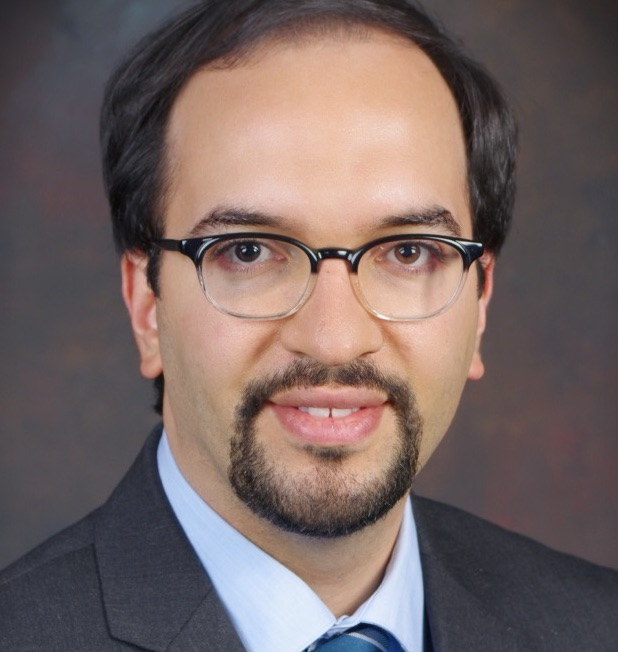

Hadi Meidani (Faculty)

Dr. Meidani earned his Ph.D. in Civil Engineering, together with a M.S.
in Electrical Engineering from the University of Southern California (2012).
After Ph.D. graduation, he was a Postdoctoral Scholar in the Department of
Aerospace and Mechanical Engineering at USC (2012-2013) and a Postdoctoral
Research Associate in the Scientific Computing and Imaging Institute at the
University of Utah (2013-2014). Since Fall 2014, he has been an Assistant Professor
in the Department of Civil and Environmental Engineering at the University of
Illinois at Urbana-Champaign.
Graduate students
Vitor Ferreira Grizzi (PhD student)
Rini Jasmine Gladstone (PhD student)
Tong Liu (PhD Student)
Vincent Zhong (PhD student)
Yufan Zhang (MS student)
Nina Trousdale (Undergraduate researcher)
Warren Jidjana (Undergraduate researcher)
Previous Group member
Mohammad Amin Nabian (PhD, 2015-2020. Senior Software Engineer, AI-HPC, NVIDIA)
Xiyue Li (MS, 2018-2019. Transportation Engineering at Champaign County Regional Planning Commission)
Negin Alemazkoor (PhD, 2014-2019. Assistant Professor at University of Virginia)
Xu Wu (PhD co-advisee, 2015-2017. Assistant Professor at NCSU)
Yiyuan Lei (MS, 2018-2019. PhD Student at NYU)
Shiyu Wang (MS, 2017-2018. Industry in China)
Yogesh Bhandari (MS co-advisee, 2017)
Neelotpal Shukla (MS, 2015-2017. Senior Software Engineer at Morningstar)
Shengliang Dai (MS co-advisee, 2016)
Undergraduate Research Assistants
Bora Ozaltun (2016)
Aliaa Taha (2015)
Jamil Jamil (2017)
Radha Avudaiappan (2018)
Deepak Katariya (2019)